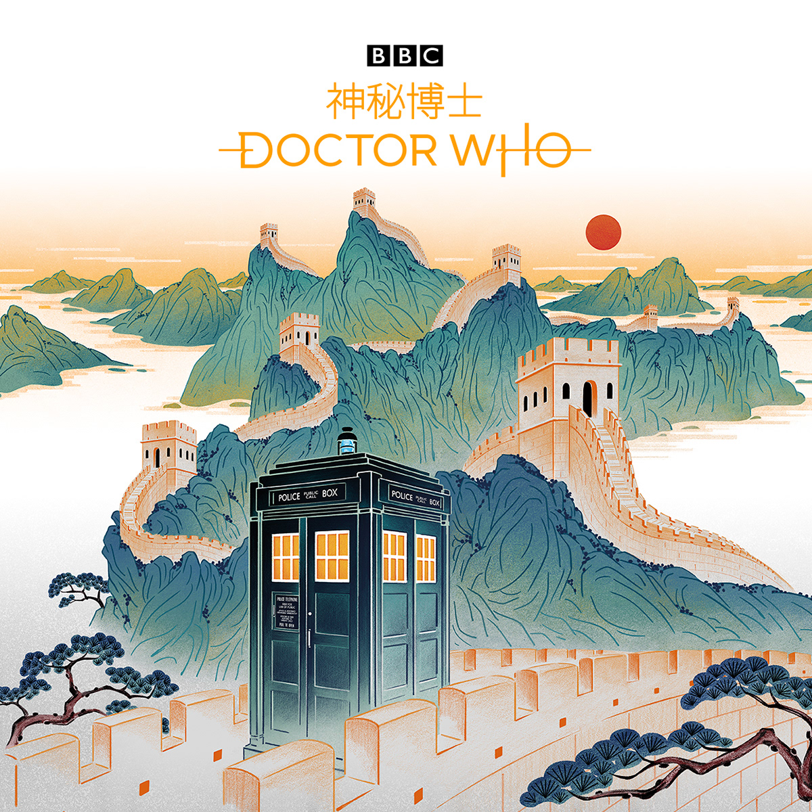
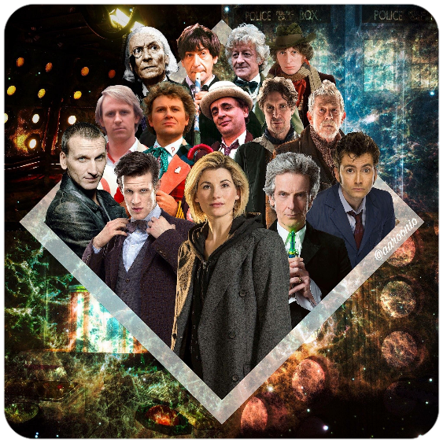
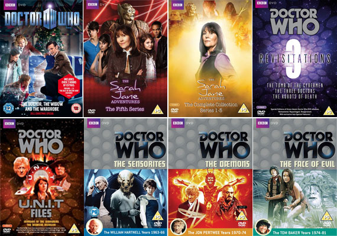

Trailer
Imagine promoțională pentru serial desenată de Feifei Ruan
Doctorii de până acum
Introducere
Doctor Who este un serial TV științifico-fantastic produs de BBC. Programul descrie aventurile unui Time Lord (Lord al Timpului), care își spune „The Doctor” și călătorește în timp și spațiu cu nava lui, TARDIS, care este camuflată ca o cabină telefonică de poliție din . Împreună cu asistenții săi călătorește în timp și spațiu și salvează lumea de diferite pericole. Serialul este prezent în Guinness World Records ca fiind cel mai lung serial science fiction din lume și de asemenea este o parte semnificativă a culturii populare britanice, devenind un serial idol favorit în lumea întreagă. Este recunoscut pentru poveștile pline de fantezie, efecte speciale ingenioase cu buget redus și pentru pionierat în muzica electronică (produsă original de BBC Radiophonic Workshop). În Marea Britanie și în alte părți, programul a devenit un cult favorit de televiziune și a influențat generații de oamenii de televiziune din Marea Britanie, mulți dintre ei vizionând serialul în copilărie. A fost recunoscut de critici și de public ca fiind unul dintre cele mai bune programe de televiziune din Marea Britanie, primind în anul premiul BAFTA pentru „Cel mai bun serial de dramă”. Programul inițial a fost difuzat între anii -. După o încercare nereușită de a revigora producția cu un backdoor-pilot, sub forma unui film de televiziune în , programul a fost relansat cu succes în , produs in-house de BBC Wales in Cardiff. Doctor Who are de asemenea spin-off-uri, Torchwood orientat către o audiență adultă și The Sarah Jane Adeventures orientat către copii. Altele sunt K-9 and Company, K-9, Doctor Who Confidential sau Totally Doctor Who.
Blink Suite
Lansări ale episoadelor din Doctor Who în format fizic
